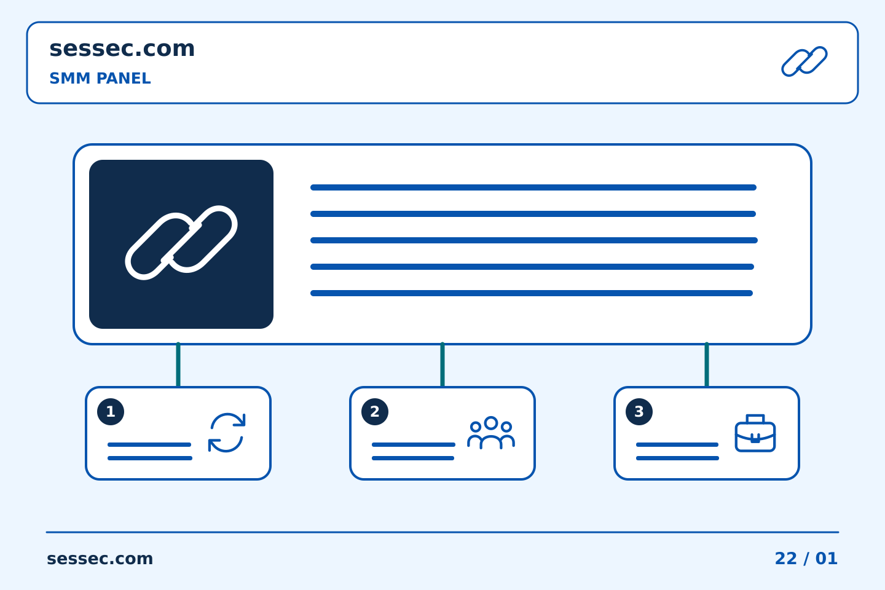

Service catalogue
Browse services with clear prices and order limits.
Explore services, manage your orders and track your results.
Do not have an account? Sign up
A straightforward way to manage your social media orders.
Browse services with clear prices and order limits.
Add funds using the payment methods available in your panel.
Follow your order status from your account.
Contact our team through your support tickets.
Four simple steps from your first visit to your first order.
Register and sign in to your panel.
Choose a payment method and fund your balance.
Select a service and enter your order details.
Check progress and updates from your account.
Keep your account, balance and support conversations in one place.
Read the description, limits and refill conditions before ordering. Delivery times depend on the service and provider.
Open a support ticket from your account and include your order ID so our team can assist you.
Start with a single order, then use the tools that fit your workflow.
Submit multiple service, link and quantity entries together.
Schedule repeated runs when the selected service supports it.
Use the documented API to connect your own application.
A quick check before submitting helps avoid unnecessary delays.
Keep your questions and replies together in your account. Add a screenshot when it helps explain the issue.
Answers to common questions about your panel.
An online catalogue where you can browse social media services and manage your orders.
Sign in, add funds, choose a service and enter the required information.
Submit multiple orders using the required service, link and quantity format.
For supported services, schedule an order over multiple runs at the interval you choose.
Open a ticket from your account. Include the relevant order ID and details.
Helpful articles for using your panel.

31/10/2026 00:01
រៀបចំការប្រមូតផេកឱ្យច្បាស់លាស់: ការឌិកូដអក្សរកាត់មុនពេលទិញ SMM Panel | Sessec — កំណត់ត្រាយុទ្ធនាការច្បាស់លាស់ជួយម្ចាស់ផេកសម្រេចថាអ្វីគួរធ្វើម្ដងទៀត និងអ្វីគួរកែប្រែ។...
Read more
31/10/2026 00:01
រៀបចំការប្រមូតផេកឱ្យច្បាស់លាស់: ការរួមបញ្ចូល SMM Panel៖ ការផ្គូផ្គងស្លាកភារកិច្ចជាមួយសេចក្តីយោងលំដាប់ | Sessec —...
Read more
31/10/2026 00:01
រៀបចំការប្រមូតផេកឱ្យច្បាស់លាស់: ការប្រៀបធៀប SMM Panel៖ ការប្រើប្រាស់អព្យាក្រឹត ការពិពណ៌នាមានប្រយោជន៍ | Sessec —...
Read more